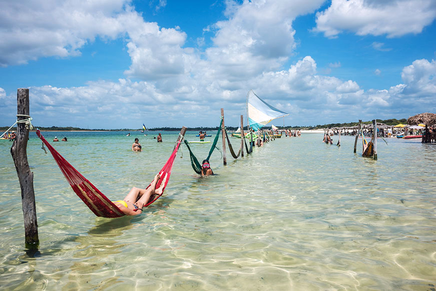

Descobrindo as Praias do Nordeste
Data da publicação:
As praias do Nordeste brasileiro são mundialmente reconhecidas por suas águas mornas, coqueirais e piscinas naturais.
Destacam-se a Baía do Sancho (PE), Maragogi (AL), Porto de Galinhas (PE), Praia do Forte (BA), Jericoacoara (CE) e Pipa (RN), oferecendo desde agito até refúgios paradisíacos ideais para mergulho e descanso durante todo o ano.
